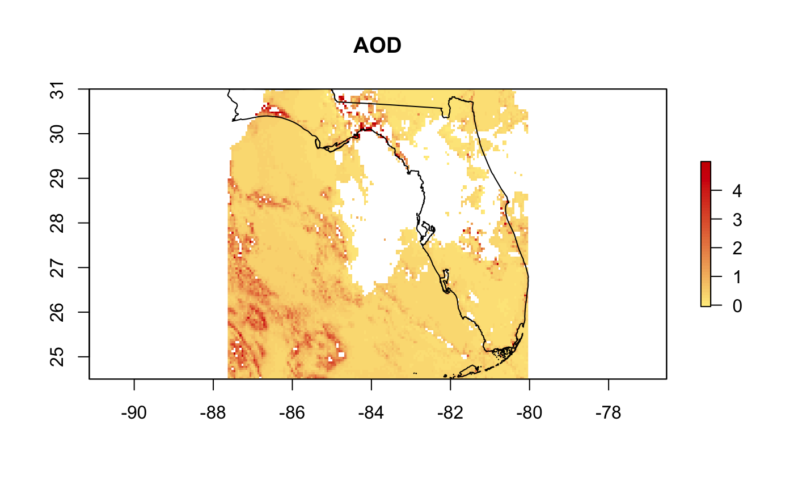

Working With GOES AODC Rasters
Mazama Science
8/12/2019
working_with_goes_aodc_rasters.RmdRaster Objects
A Raster is used to store and visualize information that is “gridded” like the pixels of an image. It is tailored towards visualizing geospatial data so that each pixel (or “cell”) of the Raster covers a small area of the Earth’s surface and the color represents the value of a measurement, such as aerosol optical depth. A Raster is created in several steps, but the process can be streamlined with MazamaSatelliteUtils functions. Let’s walk through the process first though to understand what Rasters are made of and how they are put together:
Creating a RasterLayer
Before any data can actually be rastered, a RasterLayer must first be defined in order to to set up the grid to draw to. This grid is given a bounding box with min/max longitudes and latitudes as well as a horizontal and vertical resolution given the number of rows and columns of cells. Like a digital image, more pixels results in a sharper and less blocky result.
The last requirement is a Coordinate Reference System (CRS) proj4string. This is necessary to project the RasterLayer over the correct area on Earth using standard points of reference. “+proj=longlat +datum=WGS84 +ellps=GRS80” is the default we use and can be broken up into several elements:
proj=longlat: The projection system to use in order to transform 3D spherical world coordinates onto our 2D screen. In this case we’ll use longitude and latitude. There are quite a lot of others to choose from.
datum=WGS84: A coordinate system for the Earth. The WGS84 (World Geodetic System 1984) is a common standard and is used for Google Maps.
ellps=GRS80: The ellipsoid used to model the Earth. GRS80 and WGS84 are almost identical.
Further reading on CRS and projections: More on geodetic systems PROJ4 more on CRS. Overview of Coordinate Reference Systems (CRS) in R Coordinate Systems in R
res <- 0.05
bbox <- sp::bbox(florida)
lon_min <- bbox[1, 1]
lon_max <- bbox[1, 2]
lat_min <- bbox[2, 1]
lat_max <- bbox[2, 2]
ncols <- ((lon_max - lon_min) / res) + 1
nrows <- ((lat_max - lat_min) / res) + 1
rasterLayer <- raster::raster(nrows = nrows, ncols = ncols,
xmn = lon_min, xmx = lon_max,
ymn = lat_min, ymx = lat_max,
crs = "+proj=longlat +datum=WGS84 +ellps=GRS80")Rasterizing SpatialPoints
Once the RasterLayer grid is defined, we can rasterize all of the readings from our SpatialPoints object with the rasterize function. Now we have to decide how our cells should be colored based on SpatialPoint measurements. A cell will not be defined if it doesn’t contain any points, but what if it contains more than one point? For this case we define the fun parameter for rasterize, which determines how to calculate one summarizing value from many points. By default this is set to be the “mean” value for all the points in the cell.
The result of this function is a RasterBrick with a separate RasterLayer for each variable.

The “ID” layer is included automatically–coloring each cell by the ID numbers of the features in the SpatialPoints object. While it’s not very helpful in determining air quality, it does give a nice visual for how the GOES-16 ABI scans the Earth from North to South. As the ID plot legend suggests, there are about 70,000 SpatialPoint features in all:
## class : SpatialPointsDataFrame
## features : 72174
## extent : -87.63462, -80.03147, 24.52314, 31.00079 (xmin, xmax, ymin, ymax)
## crs : NA
## variables : 2
## names : AOD, DQF
## min values : -0.0500000007450581, 0
## max values : 4.99997309628816, 2The AOD and DQF measurements are more useful for our atmospheric analysis. Let’s plot them with the state border on top:
The process for creating this final RasterBrick is streamlined by the MazmaSatelliteUtils function goesaodc_createRaster. The following code produces the exact same result without having to go through the steps of explicitly defining a new RasterLayer and rastering to it:
rb_simpler <- goesaodc_createRaster(nc = nc,
res = res,
fun = mean,
bbox = bbox,
dqfLevel = 2)
plot(rb_simpler$AOD, main = "AOD", col = pal_aod(50))
plot(florida, add = TRUE)
Raster Metrics
We can select several different fun methods besides mean to calculate the final value for a cell. There are the usual statistical functions: median, sd, min, max, as well as several specific functions provided by rasterize: “count”, “first”, and “last”. “last” is used by default.
rb_mean <- raster::rasterize(spatialPoints, rasterLayer, fun = mean)
rb_median <- raster::rasterize(spatialPoints, rasterLayer, fun = median)
rb_sd <- raster::rasterize(spatialPoints, rasterLayer, fun = sd)
rb_count <- raster::rasterize(spatialPoints, rasterLayer, fun = "count")
par(mfrow=c(2, 2), mar=c(2, 3, 2, 3))
plot(rb_mean$AOD, main = "AOD Mean", col = pal_aod(50))
plot(rb_median$AOD, main = "AOD Median", col = pal_aod(50))
plot(rb_sd$AOD, main = "AOD Standard Deviation", col = pal_aod(50))
plot(rb_count$AOD, main = "Points in Cells", col = pal_aod(50))